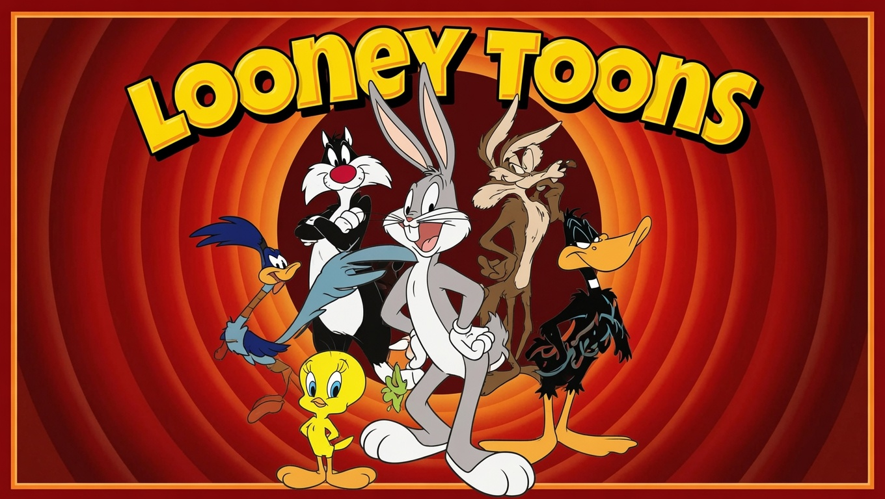
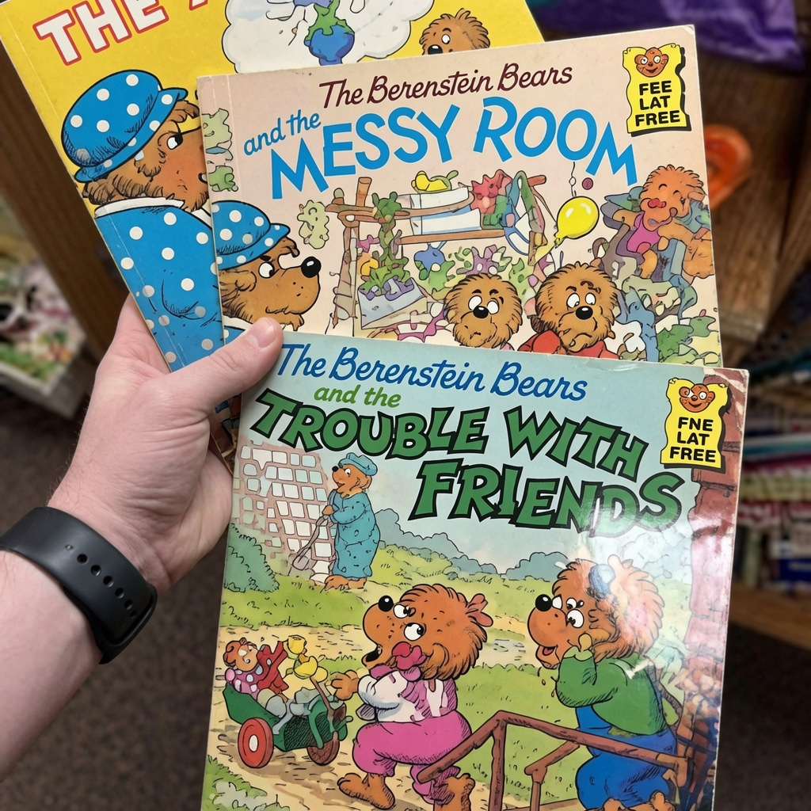
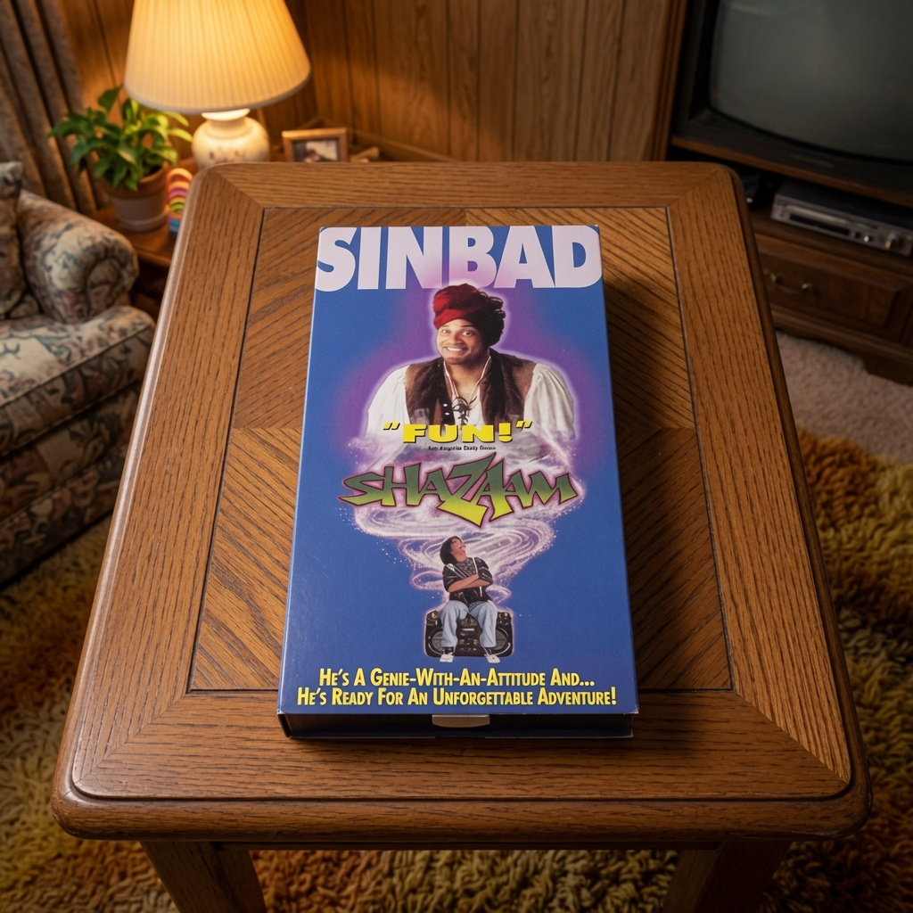

The Heritage Gazette
Special Evidence Archive
Why do millions remember the same details that official records now deny? Below is a field guide to the most persistent artifacts, reconstructed recollections, and disputed visual evidence behind the Mandela Effect.
Monopoly Man with the Monocle
Witnesses across generations insist the Monopoly mascot once wore a monocle. The corporate archive says otherwise. The memory does not budge.
A parody Monopoly-style game board labeled “MONICLE,” built entirely around the remembered monocle version of Mr. Monopoly.
Evidence note: The monocle memory is so widespread that it now inspires full visual recreations. Even joke versions like this work instantly because the public already recognizes the supposedly missing detail.
Fruit of the Loom Cornucopia
The fruit pile is familiar. The horn-shaped basket behind it is even more familiar—at least to people who insist they saw it for years.

One of the most commonly circulated remembered versions: fruit gathered in front of a cornucopia.
Evidence note: This is not a stray one-person sketch. It is the exact broad-strokes image many people describe independently: clustered fruit, leaves, and a brown cornucopia shell behind the arrangement.
Looney Tunes… or Looney Toons?
For many readers, the remembered title does not look musical at all. It looks cartoonish, literal, and unmistakable: Looney Toons.

A remembered-version poster showing the title spelled “Looney Toons,” exactly as many viewers insist they saw it.
Evidence note: The persistence of “Toons” is one reason the phenomenon refuses to disappear. The remembered version feels contextually right to many people, which is precisely why they never question it until confronted.
Berenstain Bears… or Berenstein Bears?
The disputed surname remains one of the cleanest examples of a single remembered letter refusing to stay settled. Many readers do not remember “-stain.” They remember “-stein.”

Multiple book covers showing the remembered “Berenstein Bears” spelling in a way readers immediately recognize.
Evidence note: Unlike a forgotten quote or half-seen logo, this case lives in repeated reading. People remember sounding the name out, teaching it, shelving it, and still landing on the same missing “e.”
“Shazaam” — the Sinbad VHS That Should Not Exist
Perhaps the boldest visual dispute of all: a genie film starring Sinbad that official history says never happened, despite the stubborn survival of cover-art memories.

A VHS-style “Shazaam” cover featuring Sinbad in genie attire, matching the remembered movie image many people describe.
Evidence note: The enduring power of this image is not just that it exists. It is that it matches what people swear they remember: Sinbad, genie imagery, VHS-era design, and a title that feels instantly familiar.